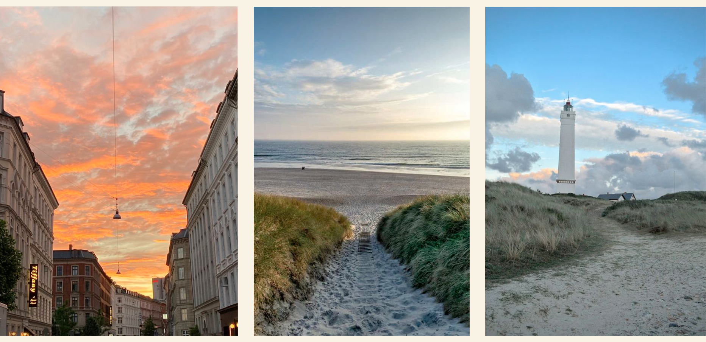

UD I DET BLÅ
Hvorfor Komme Ud i Det Fri?
Nogle gange, når kedsomheden trænger sig på, er det bedste middel, at komme ud i det blå. Naturen, med sin skønhed og uendelige åbne rum, kan være den bedste kur mod kedsomhed og stress. Her er nogle grunde til, hvorfor du bør overveje at trække i dine udendørssko og udforske det blå, når du keder dig:
- Frisk luft og natur: At træde ud i det fri giver dig mulighed for at trække dyb, ren luft og lade naturens skønhed omringe dig. Frisk luft kan gøre underværker for dit sind og din krop, og naturens skiftende scenerier kan give dig inspiration og glæde.
- Fysisk aktivitet: At udforske naturen kræver ofte fysisk aktivitet. Vandreture, cykelture eller en gåtur - kan hjælpe med at frigive endorfiner, der øger dit humør og energiniveau. Det kan også være en glimrende måde at komme i form på, uden at det føles som en byrde.
- Stressreduktion: Naturen har en beroligende virkning på sindet. Lyden af bølgerne ved havet, fuglesang i skoven eller vinden, der rasler i træerne, kan bidrage til at mindske stress og bekymringer.
- Kreativ inspiration: Naturen er en kilde til ubegrænset kreativ inspiration. De smukke farver, mønstre og former i det naturlige miljø kan udfordre din fantasi og opmuntre til kreativ tænkning. Måske finder du endda et skjult talent for fotografering, maling eller skrivning, når du er ude i det blå.
Så næste gang du føler dig keder dig eller trænger til en pause fra rutinen, overvej at tage ud i det blå. Uanset om det er en vandretur i skoven, en dag på stranden eller en simpel picnic i parken, kan naturen være den bedste medicin mod kedsomhed og en kilde til glæde, afslapning og inspiration.